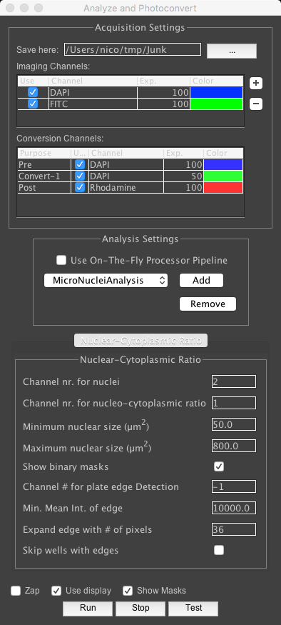
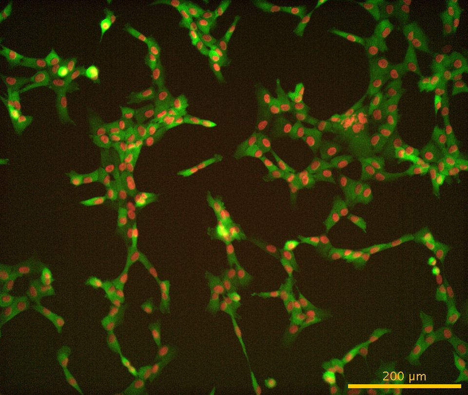
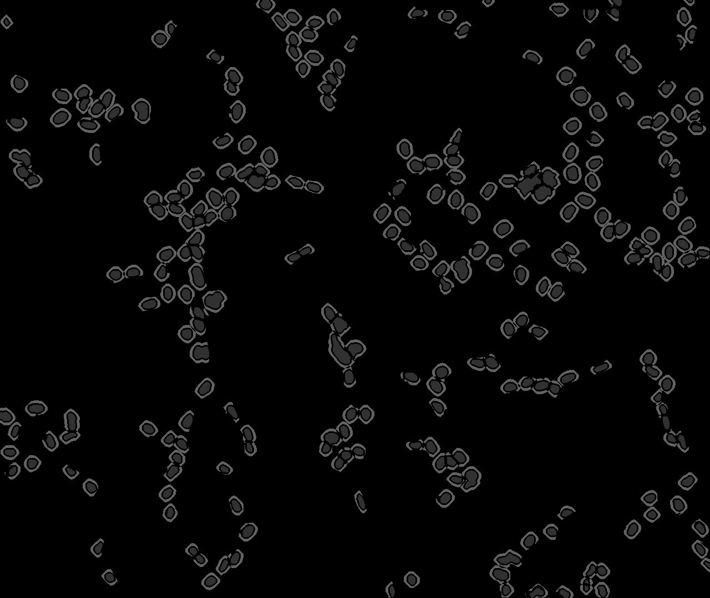
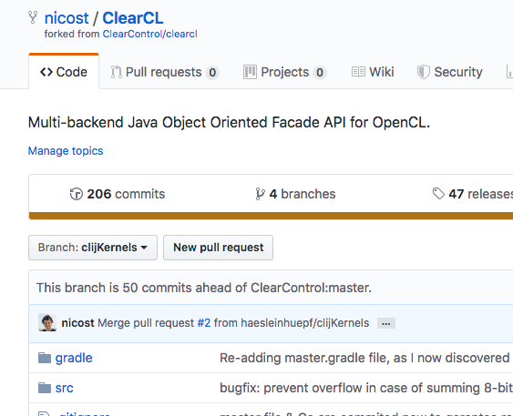
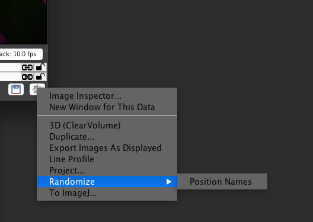
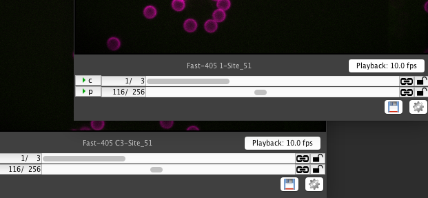
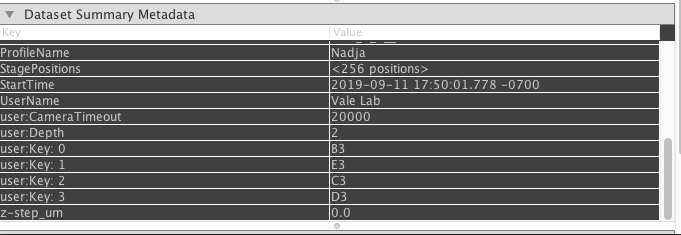
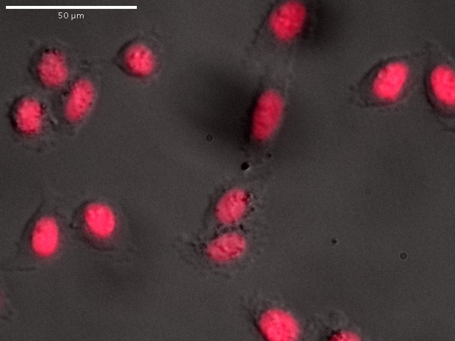
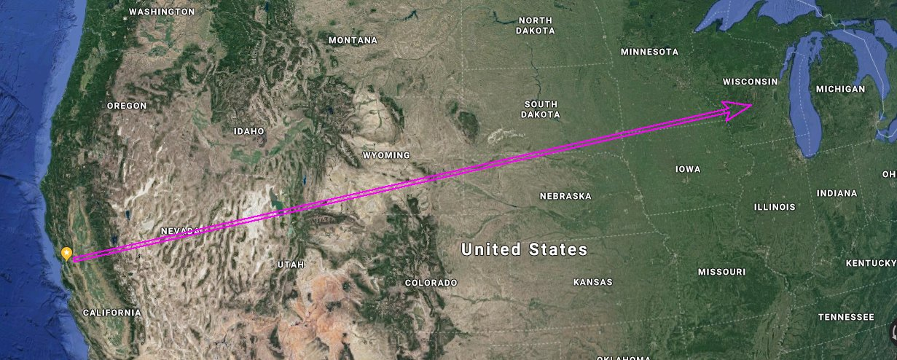
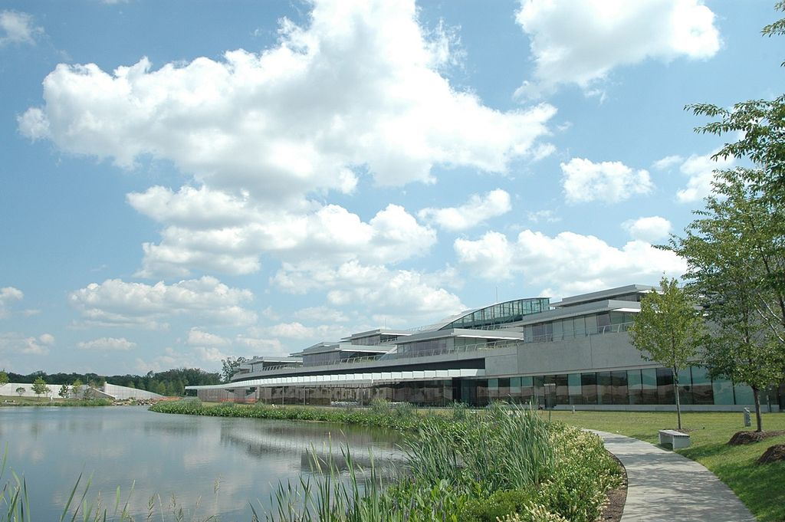

Groupmeeting 74
- CRISPR Screen Image Analysis
- Randomize well names for manual scoring
- Can Fluorocubes be used to label fixed cells?
Nico Stuurman, 2019-10-10
CRISPR-Screen Nucleo-Cytoplasmic Ratio

BoofCV
BoofCV


OpenCL Java libraries and friends

Loic Royer

Robert Haase

End Game:
Python
Deep Learning
Tensorflow
Pytorch
Numpy

Tensorflow
Pytorch
Numpy
https://lmb.informatik.uni-freiburg.de/people/ronneber/u-net/
Randomize well names for manual scoring



Fluorocubes as cell-labeling reagents
Hela 283 (Neon-Green-Histone-Halo), PF fix, TX-100, sssDNA

JF640
JF640

Fluorocube Atto-647N
Micro-Manager updates

Mark Tsuchida


Stephan Preibisch
Raghav Chhetri
THANK YOU ALL!!!